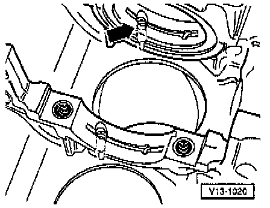

Oil Spray Jet: Service and Repair
Removing and installing oil spray nozzle
Note: Oil spray nozzles are installed at main bearings 2 and 7
Crankshaft removed
Remove with 4 mm (5/32in) diameter punch
Install by hand with punh, 6 mm (7/32 in) diameter -arrow-